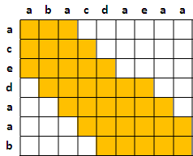
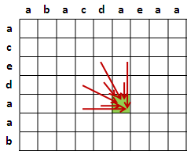
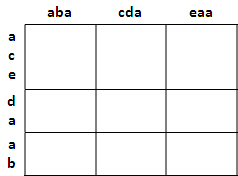

Approximate String Matching
Approximate String Matching
Sequence Alignment: Dynamic Time Warping
Dynamic Time Warping
用途是比對兩個字串（數列）的相似程度（距離）。
其實就是「Longest Common Subsequence」的Dynamic Programming演算法，唯一的差別就是DTW可以自行設定比對成功、比對失敗分別要加多少數值，不一定是一和零。
各位可以讓DTW的計算結果是一個距離函數，就能客觀地衡量多個物品之間的差異程度，而不會導致AB很像、BC很像，結果AC完全不像的情況。
特殊技巧
如果想要均勻比對，可以自行設定表格計算範圍，甚至可以設定只算i與j很接近的格子、格子內數值太大太小就不算之類的。順便加快計算速度，變成線性時間。
如果只取鄰近格子滿足不了你，可以一次多取幾格，把遞迴公式弄複雜。
如果覺得比對字元實在太瑣碎，可以把字串重新分成一段一段，以段作為單位進行比對。表格中的每個大格子都可以自己再做一次DTW，變成兩層DTW。
因為DTW發明很久了，所以方法天馬行空、什麼都有。網路上可以找到一堆。
字串的Edit Distance
一個字串（數列），新增、刪除、修改一個字元算做一步，請問需要幾步才能改成另一個已知字串（數列）？
這個問題一樣可以用LCS、DTW的概念來解決。這裡定義的「步」也是一種距離函數；當然啦，實際運用時，各種操作不一定要剛好都是一。
UVa 164 526 10739 12351
樹的Edit Distance
樹沒有環，很容易設計多項式時間演算法，於是也有人把樹拿來算個Edit Distance。
網路上資料很多，這裡就不介紹了。
k-Difference String Matching（Under Construction!）
http://algnotes.wordpress.com/2014/01/10/
http://algnotes.wordpress.com/2014/02/01/k-palindrome-subsequence/
http://maskray.me/blog/2013-02-10-bk-tree
http://shygypsy.com/tools/BkTree.cpp
k-Mismatch String Matching（Under Construction!）
http://algnotes.wordpress.com/2014/01/09/
k-Mismatch Longest Common Substring（Under Construction!）
https://arxiv.org/abs/1409.1694